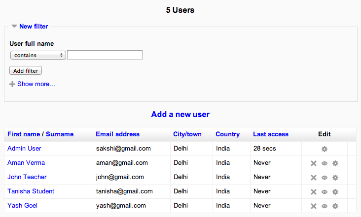

An administrator can browse and search the list of all user accounts in Settings > Site administration > Users > Accounts > Browse list of users.
Administrators can search for a particular user, using their name or email address as the search term, and then edit their profile. Editing a user’s profile is a way to reset the user’s passwords when they are unable to log in. Another reason for needing to edit a user’s profile is to disable their email address if the site is receiving lots of undelivered mail.
If you are using Email-based self-registration and a user has a problem confirming their account, you can confirm their account for them by clicking the confirm link opposite their name.
All of the columns in the browse list may be sorted in alphabetical (or numerical) order either ascending or descending, by clicking on the column heading. Your first column click sorts the user data A-Z, the second click sorts the data Z-A.
You can search for users, using particular criteria or Filters. These criteria can be configured to display data as per the following limits:
- contains
- doesn’t contain
- is equal to
- starts with
- ends with
- is empty
For example, if you wished to search for all users with Abhinav in their First Name or Last Name you would enter ‘John’ in the Full name filter and select the ‘contains’ limit.
Clicking the Show Advanced button will provide you with additional search Filters and data limits. The Filters under the Advanced area will also include any custom user profile fields that have been created within your Moodle installation
After applying a Filter to a user search, click the Add Filter button to run the user search. All Filters applied to the search are listed above the search results. You can add or remove (using the corresponding tickbox) Filters to your search criteria as required. These filters are saved within a single Moodle session.